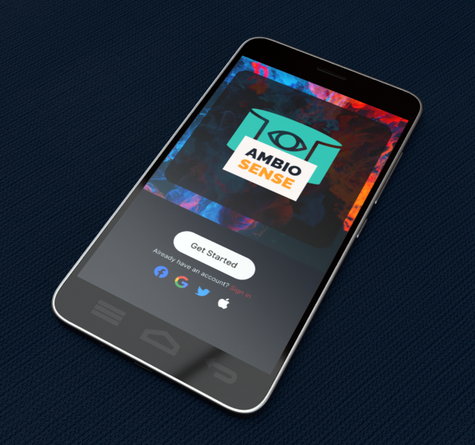
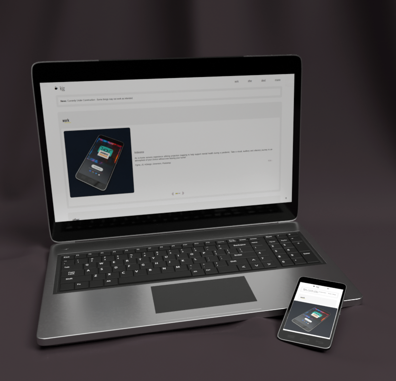

Ambiosense
An in-home sensory experience utilizing projection mapping to help support mental health during a pandemic. Take a visual, auditory and olfactory journey to an atmosphere of your choice without ever leaving your home!
Figma, JS, InDesign, Dimension, Photoshop

Responsive Personal Portfolio
Focused on being responsive and modular, allowing for completely customized pages that function on any device, this website was handcrafted as my Portfolio. Take a look around!
GitHub, Atom > HTML, CSS, JS, JQuery